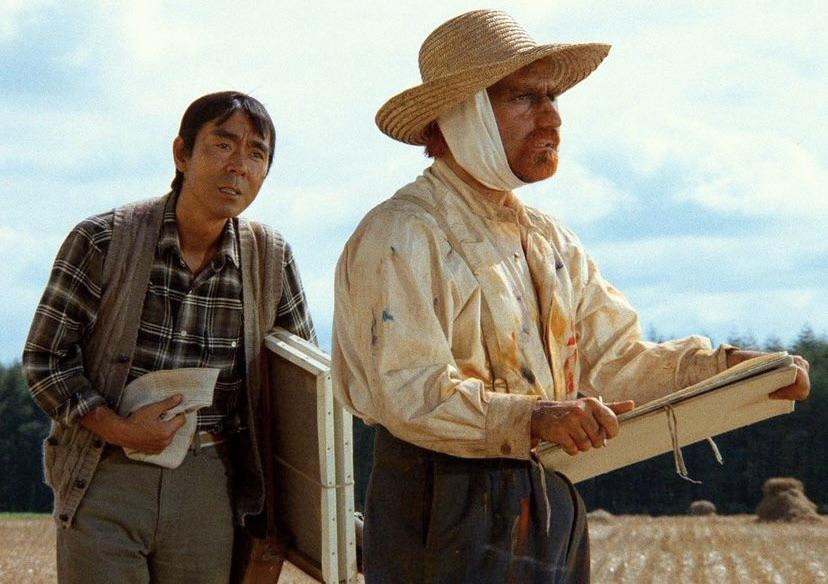

Tarkovsky, a Russian filmmaker, was deeply influenced by Kurosawa's visual style and philosophical depth. Films like "Stalker" and "Mirror" reflect Kurosawa's impact on Tarkovsky's approach to storytelling and cinematography.
Leone, known for his Spaghetti Westerns, drew inspiration from Kurosawa's "Yojimbo" for his film "A Fistful of Dollars." The use of a lone hero and the moral ambiguity in both films are notable similarities. The films were so similar that Toho films sued Leone.
Lucas cited Kurosawa's "The Hidden Fortress" as a significant influence on "Star Wars." The narrative structure, character archetypes, and visual storytelling in both films share common elements.
Scorsese has often praised Kurosawa's work, particularly "Rashomon" and "Seven Samurai." He admired Kurosawa's ability to blend action with deep character exploration, which influenced his own filmmaking style.Scorsese would even appear in Kurasawa's final film "Dreams," portraying artist Vincent Van Gogh.
© 2025 Akira Kurasawa Foundation